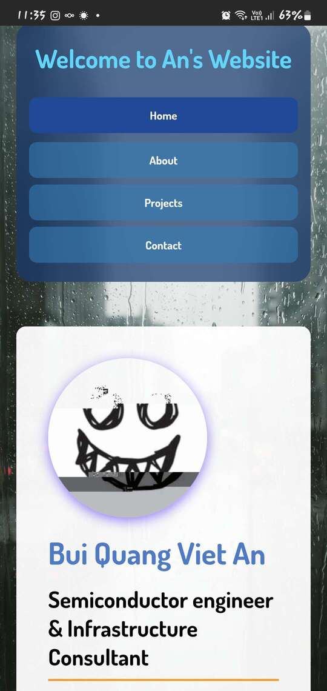

1. Design Rationale
1.1 Design Philosophy
The website follows a clean, modern design with some :
- Blurred, rounded corners navigation bar: rounded in with 12px, along with the same value with blur effect, and 1.5rem padding
- Boxed, high contrast with rounded body layout: font size is at 19px and using the infamous flex-direction :collum which has been prone to failure in some version of Chromium browser
- Background: 75% smaller resolution than the original rain-themed wallpaper from Google
- Profile Picture: Taken from my Github Personnal account then apply the glitch effect from free image editing website
1.2 Color Scheme
- Primary Blue (#437acb): Trust and professionalism
- Secondary Orange (#ff9800): Energy and highlights
- Light Cyan (#00d9ff): Headings and accents
- Dark Gray (#333): Readable body text
1.3 Typography
Uses Dosis font from Google Fonts for clean, modern appearance with excellent readability.
1.4 Layout Structure
- Buttons on Navigation Bar: addeding hover and active effect - highlight it from other uninteracted buttons
- Home, About, Project, Contact pages: all follow the same code and same layout for better loading, only exception is Project page because the modular sections for each projects has to be created from scratch
- All of the sub-pages of the website has changed default dir from simply content/... to ../content/... for better adaptation with GitHub Page
1.5 Responsive Design
- Fluid Grid: CSS Grid with auto-fit
- Flexible Typography: clamp() for viewport scaling
- Mobile-First: Optimized for mobile, enhanced for desktop
- Adaptive Navigation: Horizontal on desktop, vertical on mobile
2. Client Testing Results
2.1 Mobile Screenshot

Figure: Mobile responsive layout demonstration
2.2 PC Testing Screenshot

Figure: PC testing result using project1.png
2.3 Responsive Features
- Header Adaptation: Navigation stacks vertically on small screens
- Readable Typography: Font sizes scale with clamp() function
- Touch-Friendly: Buttons expand to full width for easy tapping
- Content Reflow: Project cards stack in single column
- Image Scaling: All images resize proportionally
2.4 Testing Summary
Successfully tested on mobile (320px-480px), tablet (768px-1024px), and desktop (1200px+) viewports. All navigation, images, and interactive elements work correctly across devices. The responsive design maintains visual consistency and usability on all screen sizes.